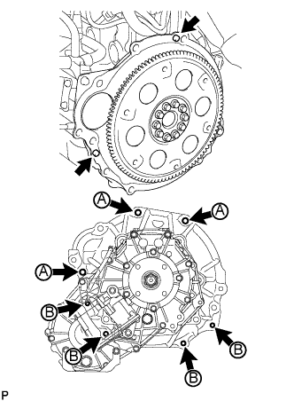
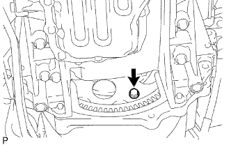
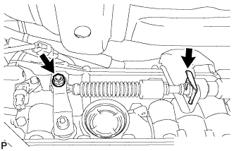
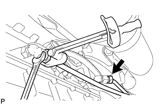

АВТОМАТИЧЕСКАЯ ТРАНСМИССИЯ В СБОРЕ > УСТАНОВКА |
| 1. ПРОВЕРЬТЕ МУФТУ ГИДРОТРАНСФОРМАТОРА В СБОРЕ |
Проверьте муфту гидротрансформатора (Нажмите здесь).
| 2. УСТАНОВИТЕ МУФТУ ГИДРОТРАНСФОРМАТОРА В СБОРЕ |
Установите муфту гидротрансформатора в автоматическую трансмиссию.
С помощью штангенциркуля и поверочной линейки измерьте расстояние "A" между сопрягаемой с трансмиссией поверхностью двигателя*1 и сопрягаемой с гидротрансформатором поверхностью ведущего диска*2 (шаг 1).
Совместите метки на картере трансмиссии и муфте гидротрансформатора, а затем введите в зацепление шлицы первичного вала и ротора турбины.
| *a | Метка |
Поворачивая муфту гидротрансформатора, введите в зацепление шлицы вала статора и статора.
| *a | Метка |
Поверните муфту гидротрансформатора, чтобы ввести в зацепление шпонку ведущей шестерни масляного насоса и паз на муфте гидротрансформатора.
| *a | Метка |
С помощью штангенциркуля и поверочной линейки измерьте расстояние B, показанное на рисунке, и убедитесь в том, что оно больше расстояния A (измеренного на шаге 1).
| 3. УСТАНОВИТЕ РАЗДАТОЧНУЮ КОРОБКУ В СБОРЕ |
Установите раздаточную коробку (Нажмите здесь).
| 4. УСТАНОВИТЕ КРОНШТЕЙН ТРОСА МЕХАНИЗМА ПЕРЕКЛЮЧЕНИЯ ПЕРЕДАЧ № 1 |
Установите кронштейн троса механизма переключения, зафиксировав его 2 болтами.
| 5. УСТАНОВИТЕ АВТОМАТИЧЕСКУЮ ТРАНСМИССИЮ В СБОРЕ |
Нанесите консистентную смазку для шлицевого соединения сцепления на поверхность коленчатого вала, вступающую в контакт с сердцевиной муфты гидротрансформатора.
| *1 | Сердцевина муфты гидротрансформатора |
| *2 | Коленчатый вал |
|  |
Перед установкой трансмиссии удостоверьтесь, что на поверхности блока цилиндров, вступающей в контакт с трансмиссией, закреплены 2 штифта.
Установите трансмиссию и закрепите ее 7 болтами.
 |
Закрепите опору выпускного коллектора 3 болтами.
| 6. УСТАНОВИТЕ УСТАНОВОЧНЫЙ БОЛТ МУФТЫ ГИДРОТРАНСФОРМАТОРА И ВЕДУЩЕГО ДИСКА |
|  |
Проверните коленчатый вал, чтобы обеспечить доступ к местам установки 6 установочных болтов муфты гидротрансформатора, и, удерживая ключом болт шкива коленчатого вала, вверните каждый болт.
Установите пылезащитное уплотнение картера маховика.
| 7. ПОДСОЕДИНИТЕ ЖГУТ ПРОВОДОВ И РАЗЪЕМ |
Подсоедините разъем датчика положения паркинга/нейтрали, разъем жгута электропроводки трансмиссии, 2 разъема датчиков частоты вращения и боковой разъем системы управления раздаточной коробкой.
Присоедините зажим разъема и 5 зажимов жгута проводов.
Наклоните автоматическую трансмиссию.
Подсоедините провод соединения с массой и закрепите его гайкой.
| 8. ПОДСОЕДИНИТЕ ШЛАНГ САПУНА |
Подсоедините 2 шланга сапуна раздаточной коробки к двигателю.
| 9. УСТАНОВИТЕ ЗАДНЮЮ ПОДУШКУ ОПОРЫ ДВИГАТЕЛЯ № 1 |
Установите подушку опоры двигателя на трансмиссию и закрепите ее 4 болтами.
Установите теплозащитный экран задней опоры двигателя на подушку опоры двигателя и закрепите болтом.
| 10. УСТАНОВИТЕ ПОПЕРЕЧИНУ РАМЫ № 3 В СБОРЕ |
Установите поперечину рамы на подушку задней опоры двигателя и закрепите ее 4 болтами.
Установите поперечину рамы и закрепите ее 4 болтами и 4 гайками.
| 11. УСТАНОВИТЕ ПРАВЫЙ И ЛЕВЫЙ КРОНШТЕЙНЫ ЭЛЕМЕНТА ПЕРЕДНЕЙ ПОДВЕСКИ |
Установите правый и левый кронштейны элемента передней подвески, закрепив их 8 болтами.
| 12. УСТАНОВИТЕ СТАРТЕР В СБОРЕ |
Для моделей мощностью 1,4 кВт:
Установите стартер (Нажмите здесь).
Для моделей мощностью 2,0 кВт:
Установите стартер (Нажмите здесь).
| 13. ПОДСОЕДИНИТЕ ТРОС МЕХАНИЗМА ПЕРЕКЛЮЧЕНИЯ ПЕРЕДАЧ В СБОРЕ |
Установите рычаг переключения передач в положение P.
Поверните рычаг приводного вала до упора по часовой стрелке, а затем поверните его на 2 прорези против часовой стрелки для установки в положение N.
|  |
Подсоедините трос механизма переключения передач к кронштейну троса механизма переключения передач, используя новый фиксатор, а затем подсоедините конец троса к рычагу приводного вала с помощью гайки.
| 14. ПОДСОЕДИНИТЕ ВПУСКНОЙ ПАТРУБОК МАСЛЯНОГО РАДИАТОРА № 1 И ВЫПУСКНОЙ ПАТРУБОК МАСЛЯНОГО РАДИАТОРА № 1 |
Подсоедините концы 2 патрубков масляного радиатора к соответствующим штуцерам патрубков масляного радиатора, предварительно закрепив их вручную.
Сомкните 3 зажима патрубков масляного радиатора № 2 и вверните 3 болта.
|  |
С помощью разрезной головки закрепите впускной и выпускной патрубки.
| 15. УСТАНОВИТЕ ПАТРУБОК МАСЛОНАЛИВНОЙ ГОРЛОВИНЫ ТРАНСМИССИИ В СБОРЕ |
 |
Покройте новое кольцевое уплотнение слоем трансмиссионной жидкости и установите его на патрубок маслоналивной горловины.
Закрепите патрубок маслоналивной горловины на трансмиссии с помощью 2 болтов.
Установите щуп проверки уровня масла.
| 16. УСТАНОВИТЕ КАРДАННЫЙ ВАЛ В СБОРЕ |
Установите карданный вал (Нажмите здесь).
| 17. УСТАНОВИТЕ ПЕРЕДНИЙ КАРДАННЫЙ ВАЛ В СБОРЕ |
Установите передний карданный вал (Нажмите здесь).
| 18. УСТАНОВИТЕ НИЖНИЙ ЗАЩИТНЫЙ КОЖУХ КАРТЕРА РАЗДАТОЧНОЙ КОРОБКИ |
Установите нижний защитный кожух картера раздаточной коробки и закрепите его 4 болтами.
| 19. УСТАНОВИТЕ ПРИЕМНУЮ ТРУБУ В СБОРЕ |
Установите приемную трубу (Нажмите здесь).
| 20. ДОБАВЬТЕ ЖИДКОСТЬ ДЛЯ АВТОМАТИЧЕСКОЙ ТРАНСМИССИИ |
| 21. ПОДСОЕДИНИТЕ ПРОВОД К ОТРИЦАТЕЛЬНОМУ ВЫВОДУ АККУМУЛЯТОРНОЙ БАТАРЕИ |
| 22. ОТРЕГУЛИРУЙТЕ ПОЛОЖЕНИЕ РЫЧАГА ПЕРЕКЛЮЧЕНИЯ ПЕРЕДАЧ |
Снимите задний вещевой ящик в облицовке туннеля пола (Нажмите здесь).
Для моделей с холодильной камерой:
Снимите задний вещевой ящик в облицовке туннеля пола (Нажмите здесь).
Установите рычаг переключения передач в положение N.
 |
Ослабьте гайку на наконечнике троса.
Немного протолкните трос переключения в направлении задней стороны автомобиля и затяните гайку.
Переведите рычаг переключения передач и убедитесь, что при перемещении рычага переключения передач из положения N в положение D возникает меньше дрожания, чем при перемещении рычага в положение P.
Установите задний вещевой ящик в облицовке туннеля пола (Нажмите здесь).
Для моделей с холодильной камерой:
Установите задний вещевой ящик в облицовке туннеля пола (Нажмите здесь).
| 23. ПРОВЕРЬТЕ ПОЛОЖЕНИЕ РЫЧАГА ПЕРЕКЛЮЧЕНИЯ ПЕРЕДАЧ |
Переведя рычаг переключения передач из положения P в положение R при включенном зажигании и нажатой педали тормоза, убедитесь, что он перемещается плавно и фиксируется в требуемом положении.
Удостоверьтесь, что рычаг переключения передач не останавливается при перемещении из положения R в положение P, и не заедает при перемещении из положения D в положение L.
Запустите двигатель и убедитесь, что автомобиль начинает двигаться вперед после перемещения рычага переключения передач из положения N в положение D и назад после установки рычага в положение R.
Если результат проверки не удовлетворяет требованиям, проверьте датчик положения паркинга/нейтрали в сборе и монтаж напольного механизма переключения передач в сборе.
Если индикатор не соответствует положению рычага переключения передач, выполните следующие процедуры регулировки.
| 24. ПРОВЕРЬТЕ, НЕТ ЛИ УТЕЧКИ ОТРАБОТАВШИХ ГАЗОВ |
| 25. ПРОВЕРЬТЕ ЖИДКОСТЬ ДЛЯ АВТОМАТИЧЕСКОЙ ТРАНСМИССИИ |
Проверьте жидкость для автоматической трансмиссии (Нажмите здесь).
| 26. УСТАНОВИТЕ УПЛОТНЕНИЕ № 1 МЕЖДУ ФАРТУКОМ ПРАВОГО ПЕРЕДНЕГО КРЫЛА И РАМОЙ |
Закрепите уплотнение между фартуком переднего крыла и рамой 5 фиксаторами.
| 27. УСТАНОВИТЕ УПЛОТНЕНИЕ ФАРТУКА ПРАВОГО ПЕРЕДНЕГО КРЫЛА |
Закрепите уплотнение фартука переднего крыла 5 фиксаторами.
| 28. УСТАНОВИТЕ ЗАДНЮЮ ЗАЩИТУ КАРТЕРА ДВИГАТЕЛЯ В СБОРЕ |
Установите заднюю защиту картера двигателя и закрепите ее 4 болтами.
| 29. УСТАНОВИТЕ ЗАЩИТУ КАРТЕРА ДВИГАТЕЛЯ № 1 |
 |
Присоедините защиту картера двигателя к кузову автомобиля, как показано на рисунке.
Вверните 4 болта.